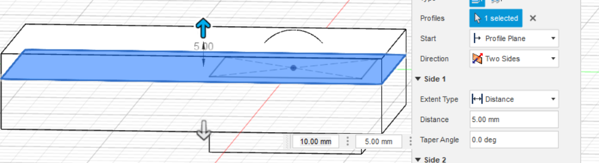

Molding and casting
This project was the second part of 3 in the final project of course Manufacturing processes (VÉL403G). In this part, we had to design a mold that we will use to create an object made from wax or foam plastic. Due to the fact that we are in a global pandemic, we just have to design the mold and simulate the molding preocess but not actually create the object.
The beginning
The first thing that we had to do was to come up with an object to make. That was very simple, since we made "The maze" as project 4 we wanted to make a ball that is used in the maze.
Since we had all used Fusion360 before in previous projects, we decided to make the object in the program Fusion360.
Fusion 360
We started of by making a sphere with the size that we felt was appropriate for our maze.
After that, we created a sketch in the middle of the sphere that will be used tater.

Next, we extruded the sketch in both directions so that it would make a rectangle that completely covered the sphere.
After that, we used the "combine feature" to make the box hollow where th sphere should be.

Next, we created a plane through the missle of the box.
After that, we used the plane th split the box into two boxes.
Next, we added support to the lower box that will help in the molding process.
After that, we used the "combine feature" to make the box hollow where th support should be.

Next, we had to make a cyllinder hole that would be used to insert the material into the mold.
The next thing that we did, was to align the top and bottom part of the box side by side.
Atfer that, we moved one side further away from the other box to have some space in between.
After that, we mada an even bigger box that contains both of the previous boxes.

Next, we combined the 3 boxes in to 1 box.

After thet, we were left with the following mold.

Then we simulated the molding and casting process and here are the following results.
If there was no pandemic, we would now go to fableb and make this mold and then fill it with silicone and after that close tha 2 boxes togeather. After that, we would inject wax into the mold and wait. After a while, we would remowe the silicone and then we would have a nice ball on the inside that we would use with our Maze.
Design files
Here are all the files we used in this project: Design files - Molding and casting project
Time log
Laga time log
| Work breakdown | Time |
|---|---|
| Decide on a design | 1 hour |
| Design the object in Fusion 360 | 7 hours |
| Learn how to simulate | 4 hours |
| Updating website | 4 hours |
| Total | 16 hours |
Search engine key words
How to mold - Fusion 360 CAM - Fusion 360 manufacturing - Fusion 360 toolpaths - Mold and cast a ball -